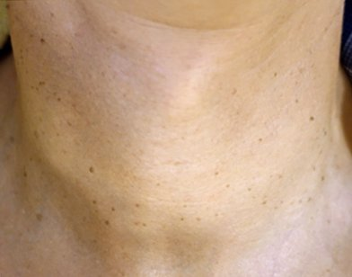

겨울이 다가오면 목을 감싸는 물건이 하나둘 늘어납니다. 셔츠 깃 위로 머플러를 두르고, 후드 집업을 걸치고, 평소 하던 목걸이도 그대로 찹니다. 그런데 이 무렵 목 주변에 납작한 돌기가 늘었다며 진료실을 찾는 분이 적지 않습니다. 이번 글에서는 목에 생긴 편평사마귀가 옷과 소품의 마찰로 번질 수 있는지, 그리고 생활 속에서 무엇을 바꾸면 좋은지 차례로 정리합니다.
목 편평사마귀는 옷깃이나 목걸이 마찰로 정말 번질 수 있나요?
마찰 자체가 바이러스를 만들지는 않지만, 마찰로 생긴 미세한 피부 틈을 통해 기존 돌기의 바이러스가 옆자리로 옮겨 갈 수 있습니다. 편평사마귀는 인유두종 바이러스(HPV)가 피부 겉층에 자리 잡아 생기는 병변이고, 바이러스는 건강하고 매끈한 피부보다 작은 상처가 난 피부에 더 쉽게 들어갑니다. 옷깃이나 목걸이 줄이 같은 자리를 하루 종일 문지르면 눈에 보이지 않는 긁힘이 생기고, 그 길을 따라 새 돌기가 줄지어 올라오는 모습이 나타나기도 합니다.
이렇게 자기 몸의 한 부위에서 다른 부위로 옮겨 가는 현상을 자가접종이라고 부릅니다. 목은 손으로 만지는 일도 많아서 마찰과 손길이 겹치면 범위가 넓어지기 쉽습니다. 다만 모든 분에게 똑같이 번지는 것은 아니고, 면역 상태와 피부 컨디션에 따라 개인차가 있습니다.

왜 하필 목이 마찰에 취약한 자리일까요?
목은 피부가 얇고 하루에도 수백 번 움직이는 부위라 같은 자리에 반복 자극이 쌓이기 쉽습니다. 고개를 돌리거나 숙일 때마다 피부가 접혔다 펴지고, 그 위를 옷과 소품이 계속 스칩니다. 여기에 땀과 피지가 고이면 피부가 무르고, 겨울에는 반대로 건조해져 작은 갈라짐이 생깁니다.
얼굴은 거울로 자주 확인하지만 목 옆과 뒷덜미는 잘 보이지 않는다는 점도 있습니다. 돌기가 몇 개일 때는 모르고 지나치다가 개수가 늘어난 뒤에야 알아차리는 경우가 흔합니다. 제주처럼 바닷바람이 센 지역에서는 바람을 막으려고 목을 감싸는 시간이 길어져 마찰 시간도 함께 늘어날 수 있습니다.
옷깃·목걸이·머플러·후드는 각각 어떤 식으로 피부를 건드리나요?
네 가지 모두 목에 닿지만 닿는 위치와 방식이 달라서, 돌기가 모이는 자리도 조금씩 다릅니다. 아래 표는 진료실에서 자주 보는 패턴을 정리한 것입니다.
| 옷·소품 | 주로 닿는 자리 | 마찰의 특징 | 생활 속 조정 방법 |
|---|---|---|---|
| 셔츠·코트 옷깃 | 목 옆, 뒷덜미 아래쪽 | 빳빳한 깃 끝이 고개를 돌릴 때마다 같은 선을 긁음 | 깃 안쪽이 부드러운 옷을 고르고, 단추를 끝까지 잠가 조이지 않기 |
| 목걸이 | 목둘레 한 줄, 걸쇠가 닿는 뒷목 | 가는 줄과 걸쇠가 좁은 면적을 반복해서 누르고 비빔 | 돌기가 있는 동안은 잠시 쉬거나, 줄이 걸리지 않는 길이로 바꾸기 |
| 머플러·목도리 | 목 전체, 턱 아래 | 털 섬유가 넓은 면을 문지르고, 땀을 머금어 피부를 무르게 함 | 면처럼 부드러운 소재를 안쪽에 두르고, 자주 세탁하기 |
| 후드·터틀넥 | 뒷목, 목 앞쪽 전체 | 두꺼운 원단이 오래 밀착되어 열과 습기가 차기 쉬움 | 실내에서는 벗어 두고, 땀이 나면 마른 수건으로 가볍게 눌러 닦기 |
표에서 보듯 목걸이는 좁고 날카롭게, 머플러와 후드는 넓고 오래 닿는 차이가 있습니다. 내 목의 돌기가 어느 선을 따라 모여 있는지 살펴보면 어떤 물건이 영향을 주는지 짐작하는 데 도움이 됩니다.
목에 난 돌기가 쥐젖인지 편평사마귀인지 짧게 구분하는 방법은?
살짝 매달려 흔들리면 쥐젖, 납작하게 붙어 있으면 편평사마귀일 가능성이 높지만, 둘이 섞여 있는 경우가 많아 진료로 확인하는 편이 안전합니다. 쥐젖은 늘어난 결합조직이 말랑하게 달린 양성 병변으로 바이러스와 관계가 없어 옮지 않습니다. 반면 편평사마귀는 바이러스성이라 마찰과 손길을 따라 개수가 늘 수 있습니다.
| 구분 | 쥐젖 | 편평사마귀 |
|---|---|---|
| 생긴 모양 | 가는 목이 있는 말랑한 돌기, 손으로 들면 흔들림 | 윗면이 평평하고 피부에 납작하게 붙은 돌기 |
| 색 | 피부색에서 짙은 갈색까지 | 피부색 또는 연한 갈색 |
| 원인 | 마찰, 체중 변화, 나이 듦에 따른 조직 늘어남 | 인유두종 바이러스(HPV) 감염 |
| 옮는 성질 | 옮지 않음 | 자가접종으로 주변에 늘 수 있음 |
두 병변 모두 옷깃이 스치는 자리를 좋아한다는 공통점이 있어, 한 사람의 목에 함께 보이는 일도 드물지 않습니다. 구분을 자세히 다룬 글은 이미 따로 있으니, 여기서는 이 정도로만 짚고 넘어가겠습니다.
마찰이 잦은 목 피부는 생활 속에서 어떻게 관리하면 좋을까요?
핵심은 목 피부에 새 틈을 만들지 않고, 이미 있는 돌기를 건드리지 않는 것입니다. 생활 속에서 바로 해 볼 수 있는 방법은 다음과 같습니다.
- 돌기를 손톱으로 뜯거나 긁지 않습니다. 가려울 때는 손바닥으로 가볍게 누르는 정도로 넘깁니다.
- 샤워 뒤에는 수건으로 문지르지 말고 톡톡 눌러 물기를 닦고, 목에 쓰는 수건은 따로 둡니다.
- 목 뒤나 옆을 면도하는 분은 돌기가 있는 자리를 피해 날을 움직이고, 면도기는 혼자 씁니다.
- 보습제를 얇게 발라 건조로 인한 갈라짐을 줄이고, 바를 때도 돌기 위를 문지르지 않습니다.
- 땀을 많이 흘린 날은 미지근한 물로 목을 헹궈 땀과 피지가 오래 머물지 않게 합니다.
이런 습관은 돌기를 없애 주지는 않지만, 새로 옮겨 가는 길을 줄이는 데 도움이 될 수 있습니다.
목걸이와 머플러는 계속 써도 괜찮을까요?
꼭 끊을 필요는 없지만, 돌기가 늘고 있는 시기라면 마찰을 줄이는 쪽으로 잠시 조정해 보시는 것을 권합니다. 목걸이는 돌기가 몰린 선을 피하는 길이로 바꾸거나, 정리가 끝날 때까지 쉬는 방법이 있습니다. 머플러는 거친 털 소재보다 안감이 매끈한 것을 고르고, 땀이 밴 채로 여러 날 두르지 않도록 자주 빨아 줍니다.
후드와 터틀넥도 마찬가지입니다. 실내나 차 안에서는 목을 열어 두어 열과 습기를 빼 주면 피부가 무르는 것을 줄일 수 있습니다. 머플러나 목걸이를 가족과 돌려 쓰는 일도 돌기가 있는 동안은 피하는 편이 좋습니다.
후한의원 제주점에서는 목 편평사마귀를 침으로 어떻게 정리하나요?
후한의원 제주점은 피부에 열을 쓰지 않는 침 치료만으로 목 편평사마귀를 정리합니다. 먼저 목에 있는 돌기가 편평사마귀인지, 쥐젖이나 점이 섞여 있는지 하나씩 확인합니다. 겉으로 보이는 크기와 피부 속 깊이가 늘 같지 않기 때문에, 병변마다 깊이를 가늠한 뒤 침이 들어가는 깊이를 달리해 변성된 조직만 덜어 냅니다.
얕게 얹힌 돌기는 가는 침으로 표면만 다루고, 조금 더 깊이 내려간 병변은 뿌리 쪽까지 따라가며 정리합니다. 목은 돌기가 촘촘하게 모이는 경우가 많아 간격을 두고 하나씩 진행하며, 열이 닿지 않으니 바로 옆 정상 피부에 가는 자극도 줄일 수 있습니다. 쥐젖이나 점이 함께 있다면 감별 결과에 따라 같은 날 진행할 수 있는지도 상담에서 안내해 드립니다. 경과와 필요한 내원 횟수에는 개인차가 있습니다.
침 치료 뒤 옷깃과 머플러가 닿는 시기는 어떻게 관리하나요?
치료한 자리가 아무는 7~10일 동안은 항생 연고나 습윤 밴드로 바깥 자극을 막고, 옷깃과 머플러가 그 자리를 문지르지 않게 신경 써 주세요. 이 기간에는 목이 넉넉하게 열리는 옷을 입고, 목걸이는 잠시 내려 두는 편이 좋습니다. 딱지가 앉으면 떼어 내지 말고 저절로 떨어질 때까지 두는 것이 색소침착과 자국 부담을 줄이는 방법입니다.
아문 뒤에도 앞에서 말한 생활 관리를 이어 가면 남아 있던 바이러스가 새 자리로 옮겨 가는 것을 줄이는 데 도움이 됩니다. 정리한 자리 주변에 새 돌기가 보이면 개수가 적을 때 다시 확인받는 것이 좋습니다. 후한의원 제주점은 평일 08:00~20:00 점심시간 없이, 토·일요일 09:00~14:00 진료하니 편한 시간에 이경원 원장과 상담해 보시기 바랍니다.